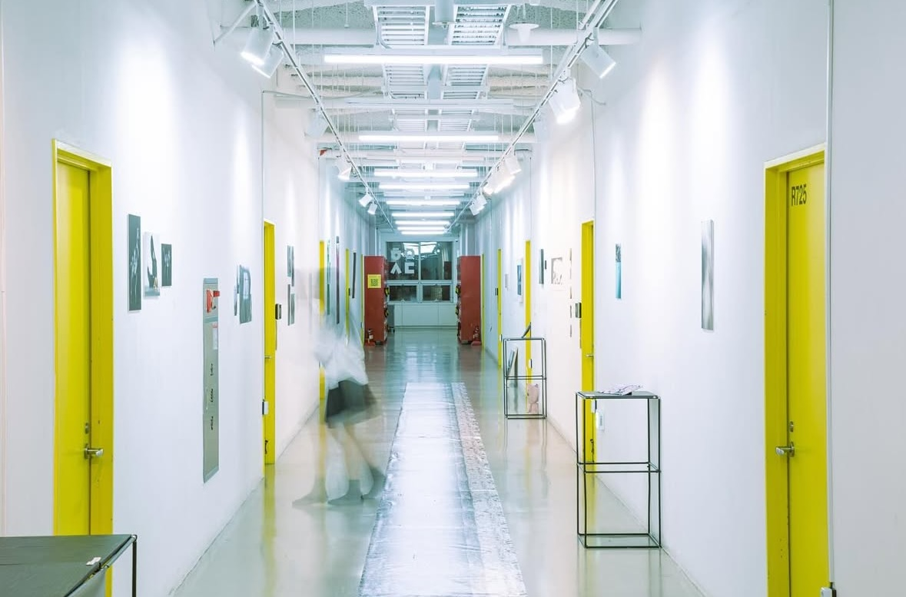
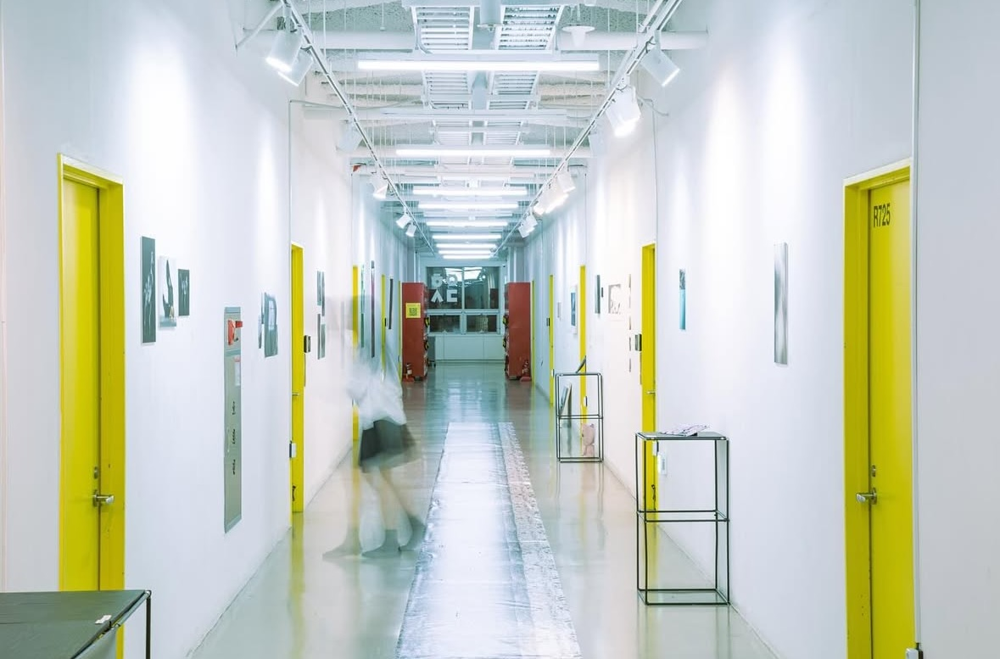
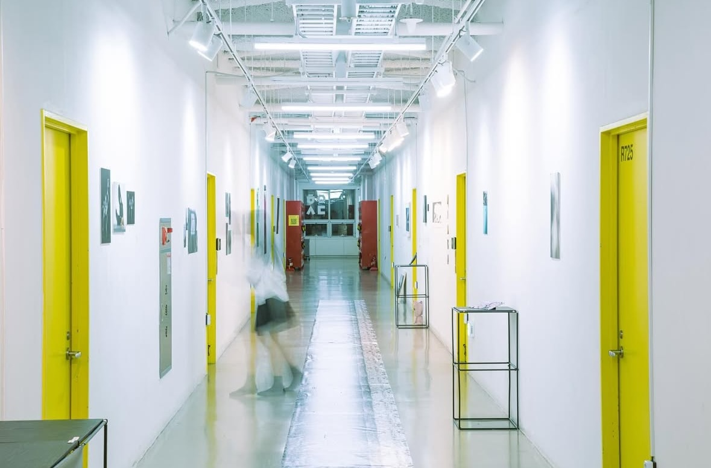
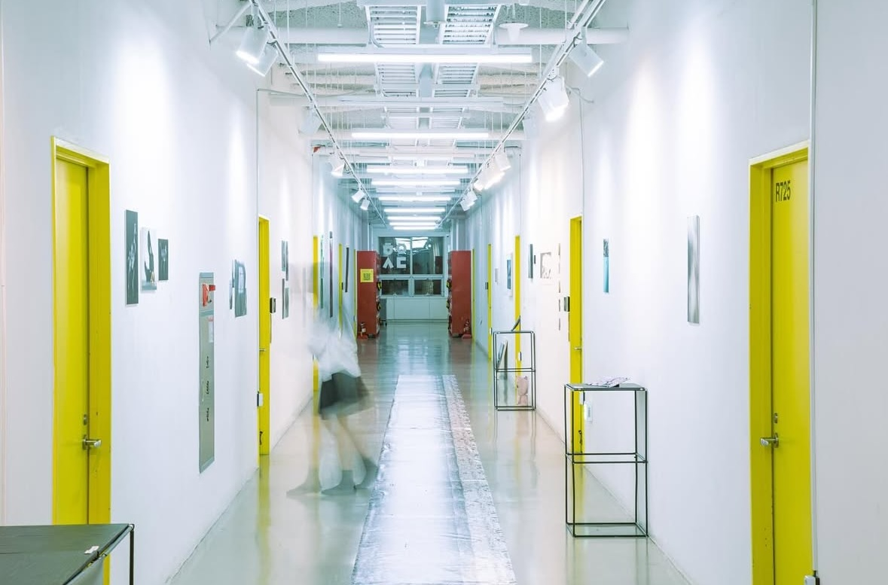

홍익대학교 시각디자인과 사진예술소모임 HIPS 새끼전 «상동성» 타이틀 레터링
레터링, 2024
각자의 세계에서 사진 매체에 대한 개인적 토대를 형성한 힙스의 신입부원들은 사진에 대한 열망이라는 층위에서, 상이한 두 차원에서 나타나는 동일 구조, 곧 상동성을 형성한다. 이번 새끼전에서 작업자들은 각자에 내재된 이러한 상동의 흔적을 발견하고, 자신의 뿌리를 더듬어 전시장에 단단히 내리박는다. 사진을 통해 관찰된 대상을 일정한 형식으로 재현하는 과정은, 마치 진화의 기록처럼 특정 순간을 보존하고 그 의미를 간직하게 한다. 작업자들은 사진을 매개체로 삼아 대상을 이해하고, 그 변화와 발전을 탐구하며, 이를 통해 과거와 현재를 연결하고 작업의 뿌리를 시각적으로 재구성한다.
아트디렉팅 / 박예진, 전시은, 추예윤
포스터 디자인 / 박예진
리플렛 디자인 / 전시은
포스터 레터링 / 박정빈
전경 사진 / 박예진
Title lettering for HIPS Baby Exhibition «Homology», a photography club for visual communication design majors at Hongik University
Lettering, 2024
Having formed a personal foundation for the medium of photography in their respective worlds, the new members of HIPS form a homology, the same structure that manifests itself in two different dimensions, at the level of the desire for photography. In this baby exhibition, the artists discover traces of this homology inherent in each of them, groping for their roots and planting them firmly in the exhibition space. The process of reproducing the observed object in a certain format through photography, like a record of evolution, preserves a specific moment and retains its meaning. The artists use photography as a medium to understand the object, explore its changes and development, and in doing so, connect the past and present and visually reconstruct the roots of their work.